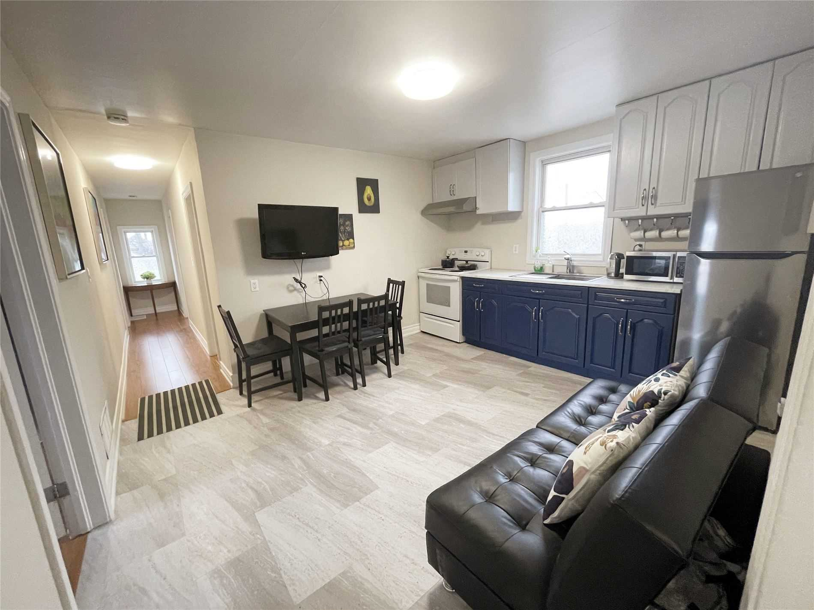
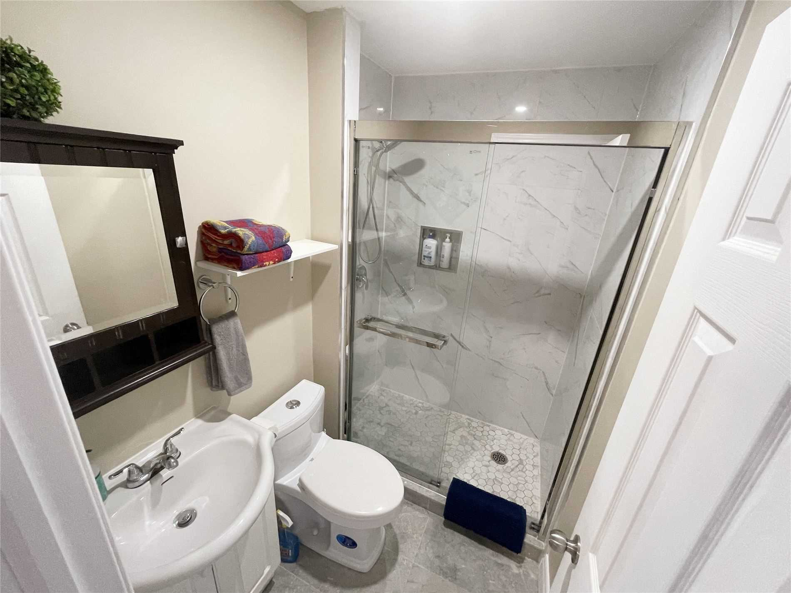
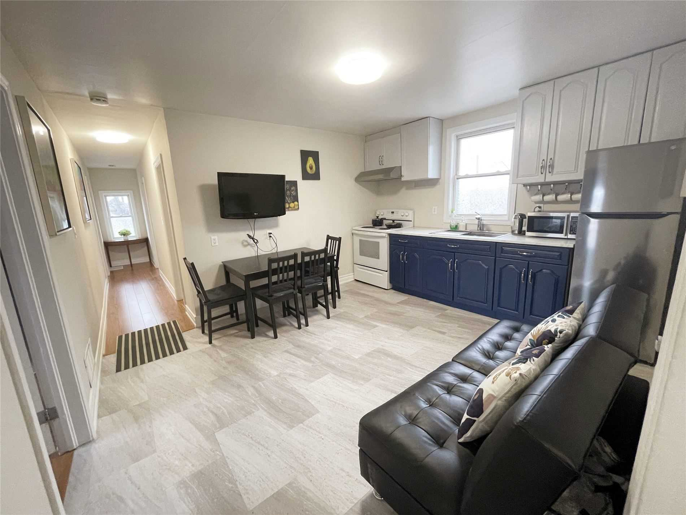
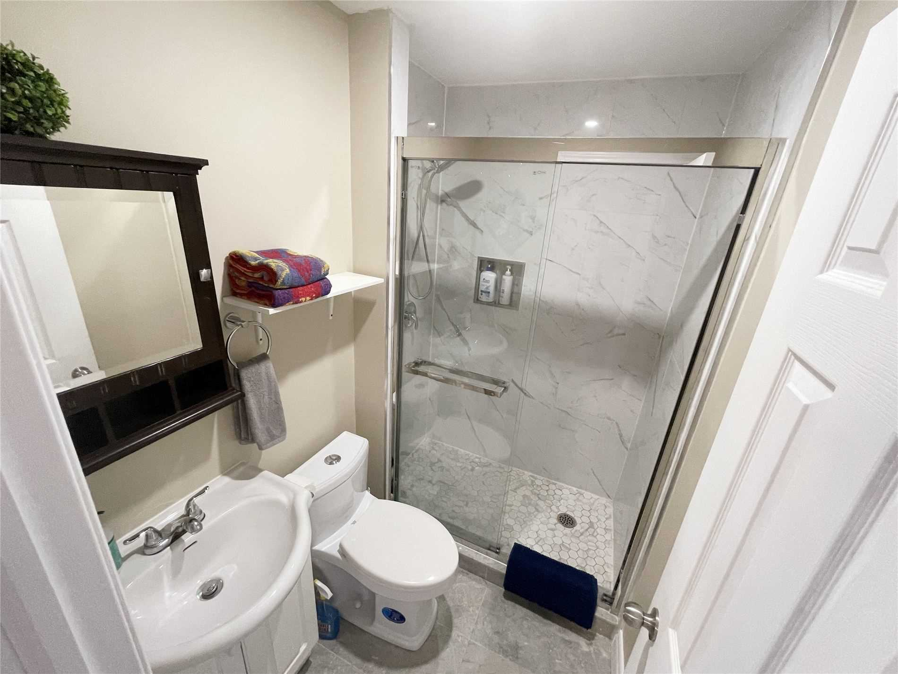

Price: $829,000
Type:Residential
Style:Detached (2-Storey)
Beds:5
Bath:5
Basement:Full (Sep Entrance)
Age:51-99 Years Old
Discription: Newly Renovated Beautiful Duplex 5 Bed 5 Bath 2 Kitchens In The Heart Of Niagara Falls.
Approx. 1.3 Km To The Falls, Casino & Tourist Attractions. Main & 2nd Floor, Full Basement All Separate
Units 2 Hydro Meters, 3 Different Entrances. Deep Concrete Driveway With Lots Of Street Parking, And A
Spacious Yard. Large Corner Lot At Dtc Zoning. Endless Possibilities
If you like this property then please complete the form.Click here to complete form.
 


